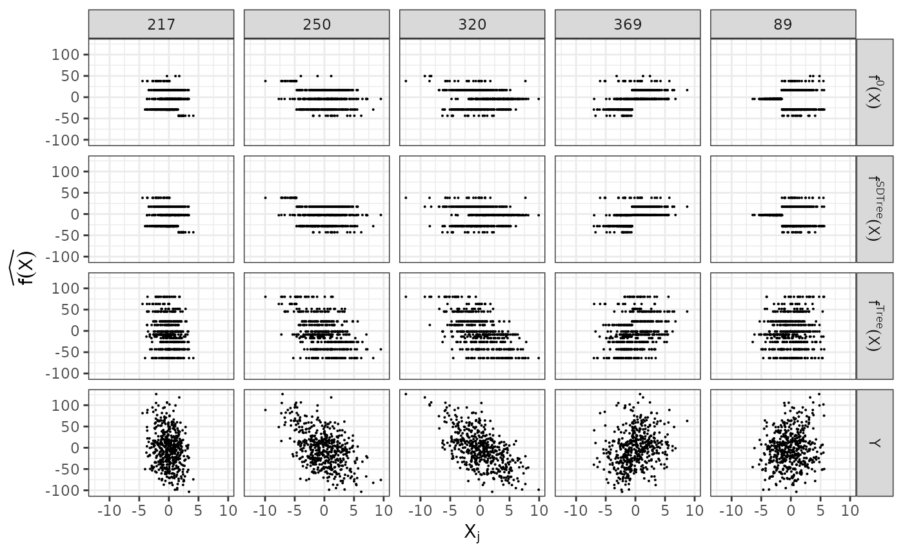

SDTree
SDTree.RmdIn the following, we compare the spectral deconfounded regression
tree \(f^{SDTree}(X)\) to the classical
regression tree \(f^{Tree}(X)\) using
simulated data from an confounded process. We simulate the data similar
to simulate_data_nonlinear() but with a random regression
tree, i.e. step-function for the causal relationship \(f(X)\).
library(SDForest)
set.seed(99)
# number of confounding covariates in H
q <- 6
# number of covariates in X
p <- 500
# number of observations
n <- 500
# number of non-zero coefficients in beta
m <- 5
dat <- simulate_data_step(q, p, n, m, make_tree = TRUE)Given the data, we can estimate both the deconfounded regression tree
and the classical regression tree. Here we estimate both trees with the
default parameters. One could choose, for example, the regularization
parameter cp in a more principled way than just setting it to 0.01,
e.g. cvSDTree() or regPath.SDTree(). But 0.01
seem like a good first try and is also the default value in
rpart() .
causal_tree <- SDTree(x = dat$X, y = dat$Y)
plain_tree <- SDTree(x = dat$X, y = dat$Y, Q_type = 'no_deconfounding', cp =)Let us observe, what the different trees predict, by comparing the predictions to the causal function and the observed response. On top, we show the underlying causal step function \(f^0(X)\) against the 5 covariates used for splitting partitions. On the bottom, we see the observed response \(Y\). The spectral deconfounded regression tree \(f^{SDTree}(X)\) predicts almost the same response as the true underlying function. The plain classical regression tree, on the other hand, results in a prediction close to the observed \(\mathbf{Y}\).

Now, we can directly look at the estimated tree structures. On top is the true underlying random regression tree, and below are the two tree estimates. In the middle is the spectral deconfounded regression tree and on the bottom is the plain classical regression tree. The nodes that choose a covariate for a split, that is also used in the true underlying causal function, are marked in text. Besides \(X_{320}\), the spectral deconfounded regression tree uses all covariates for splits with a causal relationship with \(Y\). Since \(X_{584}\) only splits three observations into the node with a response level of 49.6, it seems reasonable that the noise and confounding in the observed data overshadow this effect. The order of the splits in the spectral deconfounded regression tree is partially different from the true function. \(X_{369}\) is used too early resulting in having to split with \(X_{250}\) and \(X_{89}\) in both following subtrees. Estimating the partitions using no deconfounding results in the regression tree on the bottom right. Here, we only find two of the causal relevant covariates. Especially problematic is that the not deconfounded regression tree first splits with a few irrelevant covariates. Therefore, if an observation has \(X_{486} > -0.9\) or \(X_{430} \leq -2.7\), which has no meaning in the underlying function, no relevant split is left in the sub-tree.